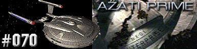
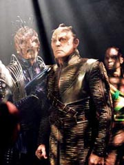
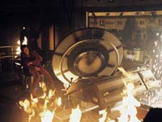
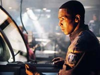

|
Enterprise
Temporada 3

Anlise do episdio por
Salvador Nogueira



|
MANCHETE
DO EPISDIO |
Comentrios:   
Descrito em poucas
palavras, "Azati Prime" um episdio com gosto
de cliffhanger. Trata-se de uma qualidade que, mesmo nos reais
desfechos de temporada, difcil de capturar. Aqui, a coisa
funciona com perfeio.
E no que Daniels no tivesse avisado.
O viajante temporal favorito de Enterprise retorna para
costurar os enredos das duas principais linhas desenvolvidas
durante o terceiro ano da srie: o mistrio da Extenso
Dlfica e suas Esferas, e a ameaa Xindi Terra. Para ofertar
explicaes a Archer, Daniels o transporta at o sculo 25,
onde, a bordo da Enterprise-J (!), ele assiste a uma batalha
travada entre a Federao e os criadores das Esferas.
Daniels suplica a Archer que desista de seu plano para destruir a
arma Xindi e em vez disso tente uma soluo diplomtica. Caso
ele no faa isso, os planos dos criadores das Esferas tero
sucesso, a Extenso Dlfica se tornar inabitvel e os Xindis
sero extintos. No assim que deve acontecer, segundo o
viajante temporal, e para isso Archer precisa tentar abrir uma via
diplomtica para o fim do conflito, explicando aos Xindis que a
informao de que a Terra ir atac-los no sculo 25 uma
mentira perpetrada pelos construtores das Esferas justamente para
que eles possam ter sucesso no futuro.
Para que o capito cumpra esse objetivo, Daniels d a ele um
artefato Xindi vindo do sculo 25, de um tripulante desta raa
que serve na Enterprise-J. Mas Archer est irredutvel: no
pode arriscar ser capturado pelos Xindis num esforo
diplomtico, pois isso condenaria a Terra destruio certa,
em caso de fracasso.
Mas Archer est determinado a salvar a Terra, ou morrer tentando.
Mais uma vez ele abandona a tica e promove at mesmo um ataque
preventivo a uma instalao Xindi, para evitar que eles
reportassem a presena da Enterprise. uma ao de guerra, e
o capito, um explorador, no est acostumado a tomar esse tipo
de deciso. Scott Bakula faz um bom trabalho ao transmitir isso,
assim como a noo de que o esforo de Archer todo para que
um dia sua tripulao possa voltar a explorar pacificamente o
espao, como j fizeram no incio de sua misso.
Agora, por mais que haja algum trabalho em torno de Archer e T'Pol
(que chora secretamente pela partida de seu capito, numa cena
que chega a ser embaraosa, exagerada e sem propsito dramtico
justificvel), bvio que "Azati Prime"
principalmente um episdio de ao.
E que episdio de ao. As
seqncias de batalha so espetaculares, assim como os
mergulhos da nave auxiliar Xindi (capturada no episdio anterior,
"Hatchery", no que
parece ser o mais importante legado daquele segmento para o arco)
no planeta-gua que abrigaria a arma em construo. Quando
chega, Archer no s descobre que o artefato gigantesco no
est mais l, como perseguido e capturado. Ele passa a ser
torturado por Xindis-insetides, mas consegue convencer Degra a
vir falar com ele, enviando um recado com uma referncia que ele
s poderia ter obtido com a ajuda de Daniels. Com isso, e de
posse do pequeno artefato Xindi, ele planta uma dvida na cabea
dos Xindis-humanides e preguias: poderia realmente Archer
estar reportando informaes vindas do futuro?
Apesar disso, Degra e seus similares
compram rapidamente a verso de Archer, no que talvez seja a
maior fraqueza do roteiro. Nem eu, no lugar deles, aceitaria o que
o capito da Enterprise est dizendo por seu valor de face.
Ainda assim, fica claro que no basta convencer os humanides e
preguias, que j parecem estar incertos da necessidade de
extinguir a humanidade. Ser preciso reverter a opinio do resto
do Conselho Xindi, composto pelos aquticos, e pelos violentos
insetides e reptilianos.
Independentemente desse sucesso, a pergunta imediata : como a
Enterprise ir sobreviver ao ataque macio a que estava sujeita?
Felizmente no ser preciso esperar meses, e uma nova temporada,
para saber a resposta; coisas de cliffhanger fora de poca...
Daniels - "There are Xindi
here, serving on the Enterprise-J."
("H Xindis aqui, servindo a bordo da Enterprise-J.")
Tucker - "What happens if you fail? Are we supposed to just keep
sendin' people in 'til there's no one left?"
("O que acontece se voc falhar? Ns temos que continuar
enviando pessoas at que no reste mais ningum?")
 A produo se reiniciou aps o perodo de feriados de fim de ano, e
a fotografia principal incluiu o uso de todos os sets principais da
Enterprise, bem como sets envolvendo os Xindi-Reptis e a Enterprise-J
do futuro, onde Daniels surge.
A produo se reiniciou aps o perodo de feriados de fim de ano, e
a fotografia principal incluiu o uso de todos os sets principais da
Enterprise, bem como sets envolvendo os Xindi-Reptis e a Enterprise-J
do futuro, onde Daniels surge.
 A direo ficou a cargo de Allan Kroeker, que j havia dirigido o
episdio de incio do arco, "The
Xindi", bem como o episdio final de Deep Space Nine,
intitulado "What You Leave Behind".
A direo ficou a cargo de Allan Kroeker, que j havia dirigido o
episdio de incio do arco, "The
Xindi", bem como o episdio final de Deep Space Nine,
intitulado "What You Leave Behind".
Histria de Rick Berman,
Brannon Braga e Manny Coto
Roteiro de Manny Coto
Direo de Allan Kroeker
Exibido em 03/03/2004
Produo: 070
Elenco:
Scott
Bakula como Jonathan Archer
Jolene Blalock como
T'Pol
John Billingsley
como Phlox
Anthony Montgomery
como Travis Mayweather
Connor Trinneer como
Charlie 'Trip' Tucker III
Dominic Keating como
Malcolm Reed
Linda Park como Hoshi Sato
Elenco convidado:
Matt Winston como Daniels
Randy Oglesby como Degra
Scott MacDonald como Comandante Rptil
Tucker Smallwood como Xindi-Humanide
Rick Worthy como Xindi-Preguia
Christopher Goodman como Thalen